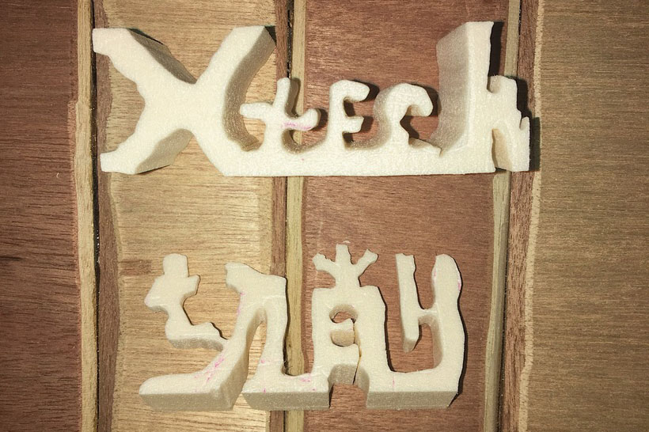
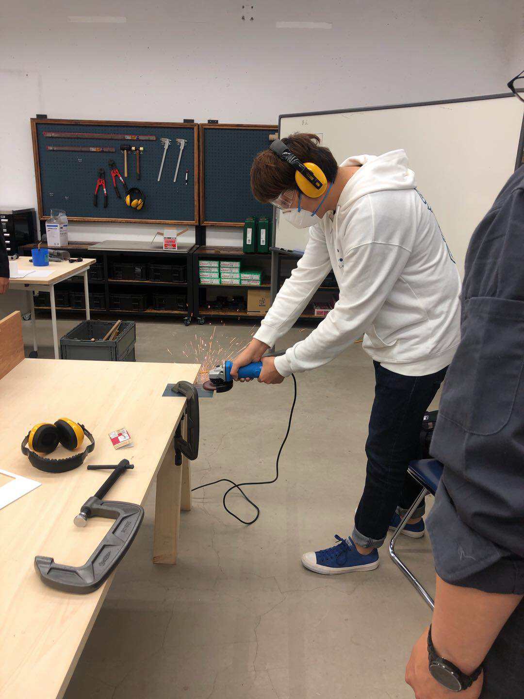
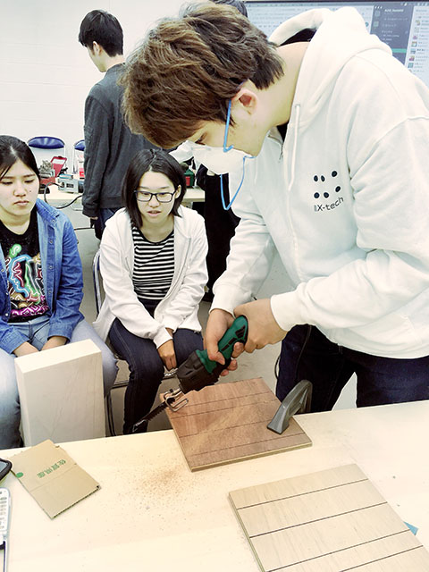
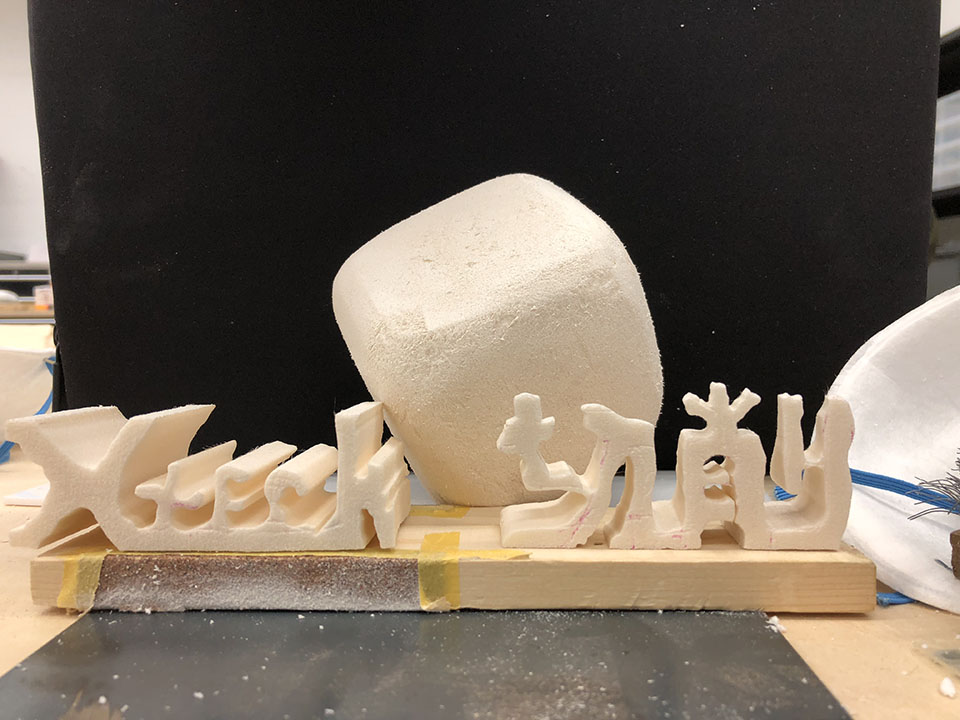

Fabble
–––––––––––––––––––––––––––––––––––––––––––––––––––––––––––––––––––––––––––––––––––––––––––––––––––––––––––––––––––––––––––––––––––––––––––––––––––––––––––––––––––––––––––––––––
僕は参加しているチームは切削チームです

切削チームを使う機械や道具は「ディスクグラインダー」「ヤスリ」「ブラシ」「サンダー」など
僕のやることは切削チームで木材や金属を切削します、及び木材を切断することをやりました！
–––––––––––––––––––––––––––––––––––––––––––––––––––––––––––––––––––––––––––––––––––––––––––––––––––––––––––––––––––––––––––––––––––––––––––––––––––––––––––––––––––––––––––––––––
それでは、金属を削ることを説明します
ディスクグラインダーで金属を削った時、火花が散るので、周りに人がいる場合や通行人が近くにいる場合は、使用する前に場所を変えるか必ず声をかけて使用する。

失敗：
１、火花の散る方向が予測できなかった。
２、削り終えた後にディスクが外れた
解決策：
１、削る向きと歯の回る方向を確認する。
２、しっかりと最後までディスクをしめて再確認する。
–––––––––––––––––––––––––––––––––––––––––––––––––––––––––––––––––––––––––––––––––––––––––––––––––––––––––––––––––––––––––––––––––––––––––––––––––––––––––––––––––––––––––––––––––

次に木工用ディスクグラインダーで木材を削ることを説明します
まずと金属削ることが一番大きな区別は火花が散らないです、代わりに木屑の量が多かったです、ちなみに木工用ディスクグラインダーを使う時に風の向きによっては自分にすごいかかるから、木屑が出る方向を把握して、注意する。
最後のやることは切断チームにSABER SAW BLADEを借りて削った木材を一本つづ切りして、チームを作りたい作品を作ります！

これは私たち作ったの作品です
